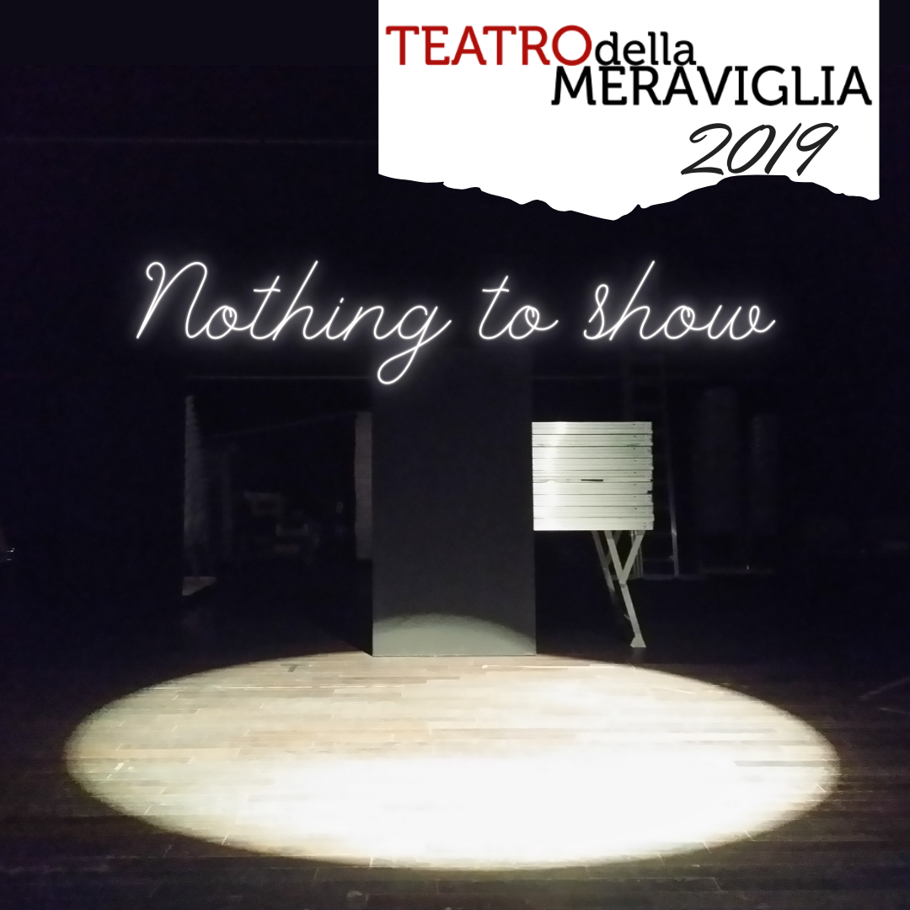

My journey as a Storyteller¶
It all began with "Emozionare con la Scienza", a free workshop held by Andrea Brunello and aimed at explaining storytelling and comunication principles to physics students. ...
Restarting from the end¶
Done for Progetto Apollo for the Raw Material 2020 event.

Note
Today is Morning Star-3, year 17 after the awakening. My name is William Trueman and today my dream will come true. Today is the day I finally start working as a Scout for the Rebuild Government. I’m so excited to start this new job. Since I made my first steps outside the spaceship when I was 3 years old, I’ve been wondering what secrets and materials lie beneath this ground and what are the main differences between this planet and the Earth. I know I’m going to find something new and make the difference for the Reconstruction!
Find the way by wandering around¶
Done for Progetto Apollo in collaboration with prof. Gianluca Lattanzi (DF@unitn)
Note
I took my time. And now that time has run out. I know what I want to do with my life: something new and multidisciplinary. Something no one I know has done before. But if I’ve never seen anyone do something like this, how can I do it first?
Nothing to show¶

Note
I asked myself: what possible could I show the public that would be unique and spectacular?
After a lot of thinking, I arrived at the ultimate solution: I have NOTHING to show.